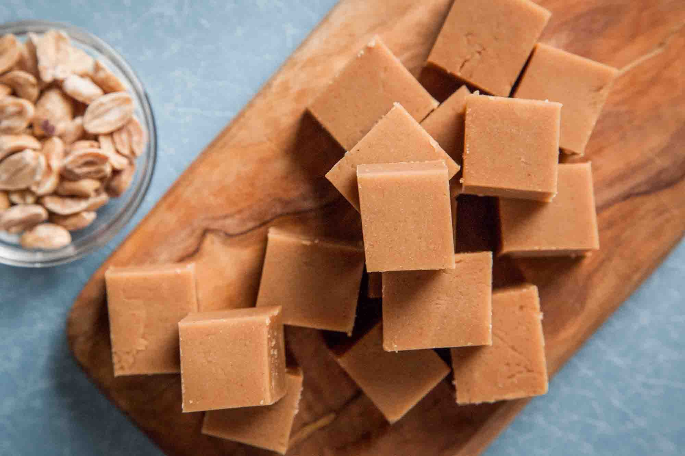

PEANUT BUTTER FREEZER FUDGE

Easy and Delicious, the kids will love!
A very easy yet tasty Peanut Butter Fudge. Only two ingredients full of tasty and fun for all the family!
Yummy, sweet, salty, sink-your-teeth-in delicious fudge that is also healthy!
INGREDIENTS
- ½ cup of Peanut Butter (Chunky or Smooth, you decide!)
- ¼ cup maple syrup
- 2 sheets parchment paper
STEPS
- Whisk peanut butter and maple syrup together in a bowl until combined
- Pour onto 1 sheet of parchment paper
- Cover peanut butter mixture with second sheet of parchment paper
- Flatten
- Place flattened peanut butter mixture into the freezer and let it freeze until hardened, something about 10 minutes.
-
Nutrition Facts
-
Per Serving:
241 calories; protein 8.1g; carbohydrates 19.5g; fat 16.3g; sodium 149.8mg